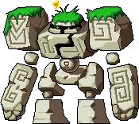

Lv. 55 · #5130101
스톤골렘
오랜 세월이 지나 숲이 가지고 있는 생명이 흘러 들어간 바위는 그 자체가 하나의 살아 있는 생명체로 변하였다. 자신이 태어난 숲을 보호할 뿐 모험자를 먼저 공격하는 일은 없다. 하지만 숲속에 함부로 들어간 모험자는 강력한 스톰골램의 펀치를 맛봐야할지도 모른다.
스탯
레벨 55- HP
- 4,000
- MP
- 120
- EXP
- 170
- 넉백 가능 데미지
- 1000+
- 물리 데미지
- 180
- 마법 데미지
- 0
- 물리 방어력
- 130
- 마법 방어력
- 100
- 속도
- -70
- 55레벨 에서의 필요 명중
- 54.99
- 메소
- 412.5
- 속성관계
- 미기재
- 체경비
- 23.53
- 형태
- 무기물형
출현 지역
출현 맵 6개맵 이름을 누르면 메이플노트의 맵 정보가 열립니다.
드롭 테이블
전체 29개| 아이템 | 아이템 ID | 드롭 확률 |
|---|---|---|
| 스톤골렘의 돌조각 | 4000022 | 30% |
| 마나 엘릭서 | 2000006 | 2% |
| 파란 포션 | 2000003 | 2% |
| 흑수정의 원석 | 4020008 | 0.4% |
| 엘릭서 | 2000004 | 0.1% |
| 마법의 가루(빨강) | 4007006 | 0.03% |
| 마법의 가루(하얀색) | 4007001 | 0.03% |
| 석궁 제작의 촉진제 | 4130013 | 0.01% |
| 블루 피에르슈즈 | 1072121 | 0.01% |
| 골드 클리브 | 1082076 | 0.01% |
| 크리스탈 완드 | 1372012 | 0.01% |
| 레드 크로스 실드 | 1092002 | 0.01% |
| 다크 쉐도우 | 1040084 | 0.01% |
| 금비 표창 | 2070003 | 0.01% |
| 완드 제작의 촉진제 | 4130010 | 0.01% |
| 그린 골든윈드슈즈 | 1072143 | 0.008% |
| 화이트 칼라스 | 1050048 | 0.008% |
| 브론즈 크루세이더 헬름 | 1002086 | 0.008% |
| 적월 바지 | 1061079 | 0.008% |
| 적월 | 1041080 | 0.008% |
| 사파이어 귀고리 | 1032002 | 0.008% |
| 브론즈 하이드후드 | 1002247 | 0.006% |
| 그린 트란도트 | 1041091 | 0.006% |
| 그린 트란도트 치마 | 1061090 | 0.006% |
| 석궁 공격력 주문서 60% | 2044601 | 0.006% |
| 활 공격력 주문서 60% | 2044501 | 0.006% |
| 호크헤드 | 1312009 | 0.005% |
| 라이덴 | 1452005 | 0.004% |
| 브라운 더블트 부츠 | 1072303 | 0.002% |
조건에 맞는 드롭 아이템이 없습니다.
확률은 메이플노트에 게시된 값입니다. 아이템 이름을 누르면 원본 아이템 정보가 열립니다. 과거 버전 데이터이므로 실제 메이플랜드와 다를 수 있습니다.